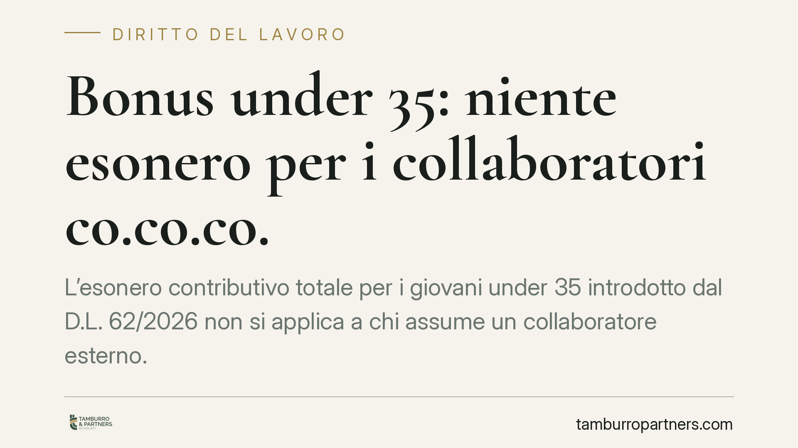

Bonus under 35: niente esonero per i collaboratori co.co.co.
L'esonero contributivo totale per i giovani under 35 introdotto dal D.L. 62/2026 non si applica a chi assume un collaboratore esterno. Il beneficio copre solo la trasformazione a tempo indeterminato di rapporti a termine già instaurati entro il 30 aprile 2026. Una distinzione che incide direttamente sui conti del datore di lavoro e che conviene chiarire prima di programmare nuove assunzioni.

Il caso
Molti datori di lavoro privati stanno valutando l'esonero contributivo totale previsto per la stabilizzazione dei giovani con meno di 35 anni. La domanda ricorrente è semplice: il beneficio spetta anche a chi assume per la prima volta un collaboratore esterno, ad esempio un titolare di contratto di collaborazione coordinata e continuativa (co.co.co.)?
La risposta è negativa. L'agevolazione è costruita per premiare la *trasformazione* di rapporti già esistenti, non l'instaurazione di nuovi rapporti con soggetti finora inquadrati come collaboratori autonomi.
Inquadramento normativo
La misura è disciplinata dall'art. 4 del D.L. 62/2026, convertito con modificazioni dalla L. 112/2026. La norma riconosce un esonero contributivo totale a carico del datore di lavoro privato per la trasformazione a tempo indeterminato dei contratti a termine di lavoratori under 35.
Il presupposto è duplice. In primo luogo, il rapporto deve essere un contratto di lavoro subordinato a tempo determinato. In secondo luogo, quel contratto deve essere stato instaurato entro il 30 aprile 2026: i rapporti a termine avviati dopo tale data restano fuori dal perimetro dell'esonero.
Il punto decisivo riguarda proprio la natura del rapporto di partenza. L'esonero presuppone l'esistenza di un lavoratore *subordinato* a termine da stabilizzare. La collaborazione coordinata e continuativa è invece un rapporto formalmente autonomo: il collaboratore non è un dipendente a tempo determinato. Di conseguenza, l'assunzione a tempo indeterminato di un co.co.co. non costituisce la "trasformazione" che la legge intende incentivare, ma un'assunzione nuova, non agevolabile con questo strumento.
Implicazioni pratiche
Per il datore di lavoro la differenza è tutt'altro che formale. Chi conta di azzerare la contribuzione assumendo stabilmente un collaboratore esterno rischia di impostare i propri conti su un presupposto errato.
Il beneficio è riservato a chi, entro il 30 aprile 2026, aveva già un lavoratore inquadrato come subordinato a termine e decide poi di confermarlo a tempo indeterminato. Fuori da questo schema, l'operazione segue le regole contributive ordinarie.
Attenzione anche a un rischio collaterale. La stabilizzazione di un collaboratore può nascondere una situazione in cui il rapporto era, nella sostanza, già subordinato. In quel caso l'eventuale riqualificazione del pregresso espone a conseguenze contributive e sanzionatorie che nulla hanno a che vedere con l'esonero in esame. Programmare l'assunzione senza verificare la storia effettiva del rapporto può quindi aprire un fronte diverso da quello previsto.
Un ulteriore profilo riguarda la data del 30 aprile 2026: è una soglia secca. Un contratto a termine firmato a maggio non rientra nell'agevolazione nemmeno se riguarda un lavoratore sotto i 35 anni. La pianificazione delle assunzioni va quindi calibrata anche sul fattore temporale.
Cosa fare in concreto
- Verifica la natura del rapporto di partenza. L'esonero spetta solo se il lavoratore è subordinato a termine, non collaboratore co.co.co.
- Controlla la data di instaurazione. Accerta che il contratto a termine sia stato avviato entro il 30 aprile 2026; oltre tale data il beneficio non opera.
- Analizza i rapporti di collaborazione in essere. Se intendi stabilizzare un co.co.co., valuta prima se il rapporto presenti indici di subordinazione, per gestire in anticipo il rischio di riqualificazione.
- Documenta i requisiti. Conserva contratti, comunicazioni obbligatorie e flussi contributivi che provino il possesso delle condizioni, in vista di eventuali controlli INPS.
- Richiedi una valutazione preventiva della singola posizione prima di presentare istanza, per evitare recuperi contributivi successivi.
La misura resta un'opportunità concreta, ma mirata. Applicarla alla fattispecie sbagliata non solo vanifica il risparmio atteso, ma può generare un contenzioso contributivo. La verifica dei presupposti, caso per caso, è il passaggio che fa la differenza.
---
*Contributo informativo a cura di Tamburro & Partners - Avv. Giuseppe Tamburro. Non costituisce parere legale.*
Ogni storia di lavoro ha i suoi tempi.
Se gestisci HR e vuoi un confronto su contenzioso, ispezioni o licenziamenti, scrivi allo studio. Ti rispondiamo entro un giorno lavorativo.